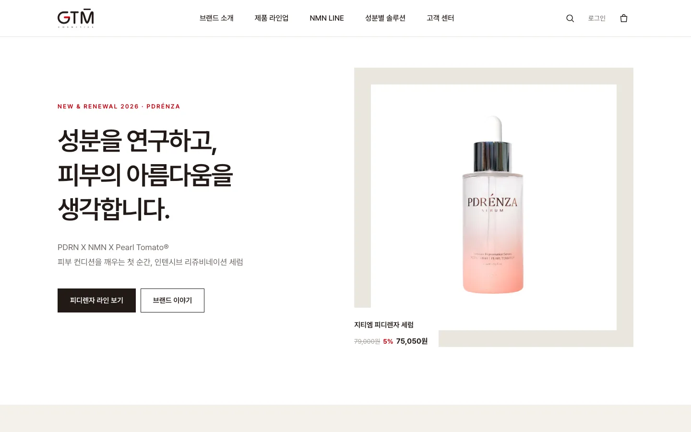
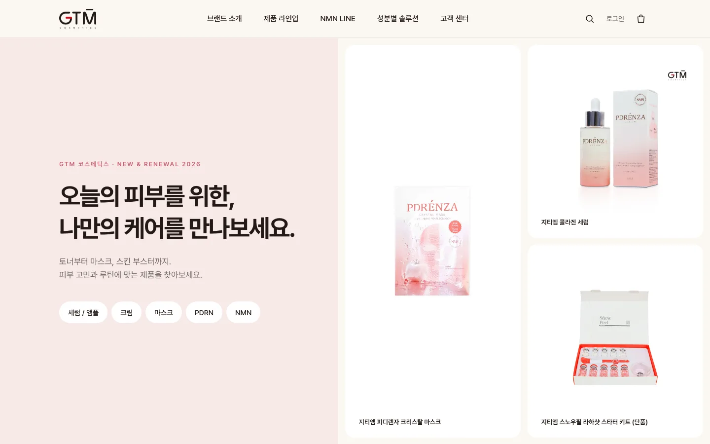

국문 메인 디자인 시안
두 가지 방향의 메인 페이지를 실제 화면으로 비교해 보세요.

A안
피부 과학의 정제된 아름다움
대표 라인 피디렌자를 중심으로 원료와 피부 자극 시험 결과를 차분하게 전하는 방향. 화이트·웜그레이에 로고 레드를 포인트로 사용했습니다.

B안
나에게 맞는 스킨케어를 발견하다
제품군·라인·성분 세 가지 길로 제품을 쉽게 찾아가는 방향. 아이보리·소프트 핑크에 제품 패키지 색을 포인트로 사용했습니다.